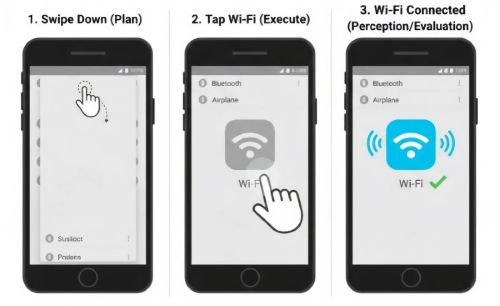

Purpose of the Analysis
This page compares Norman’s Action Cycle, the GOMS model, and KLM (Keystroke-Level Model) using practical examples to highlight differences in cognitive processing, task execution, and feedback. All examples are based on Dix et al., Human–Computer Interaction, Chapters 9 and 12.
Example 1: Enabling Wi-Fi on a Smartphone
| Stage | User Action | GOMS / KLM Interpretation | Analysis |
|---|---|---|---|
| Goal | User intends to turn Wi-Fi ON to access the internet | Goal = Enable Wi-Fi | Both models agree on the objective |
| Plan / Decision | User chooses Quick Settings instead of full Settings | Method selection in GOMS | Norman emphasizes decision-making |
| Target Identification | User visually locates Wi-Fi icon | Not explicitly modeled | Perception handled by Norman only |
| Execute | User taps the Wi-Fi toggle | KLM: M → P → K | Execution measurable in KLM |
| Feedback / Evaluate | User confirms icon state | Feedback assumed | Norman addresses evaluation gulf |
Key Insights
- Norman focuses on cognition and feedback.
- GOMS/KLM focuses on task execution and efficiency.
- Execution stage appears in all models.
Exam Takeaway: Norman explains understanding and evaluation; GOMS/KLM predicts efficiency.
Example 2: Automatic Syringe Dose Calculator

| Stage | User Action | Design Interpretation | Analysis |
|---|---|---|---|
| Goal | User wants to enter dosage safely | Clear vs unclear objective | Good design reduces cognitive load |
| Plan / Decision | User decides how to input dosage | Simple vs confusing layout | Planning easier in good design |
| Target Identification | User locates number keys | Clear vs poor visual cues | Good mapping improves perception |
| Execute | User presses keys | Accurate vs error-prone input | Execution smoother in good design |
| Feedback / Evaluate | User verifies dosage | Immediate vs weak feedback | Strong feedback closes evaluation gulf |
Key Insights
- Good design minimizes errors.
- Feedback and mapping are critical.
- Norman’s model highlights design flaws clearly.